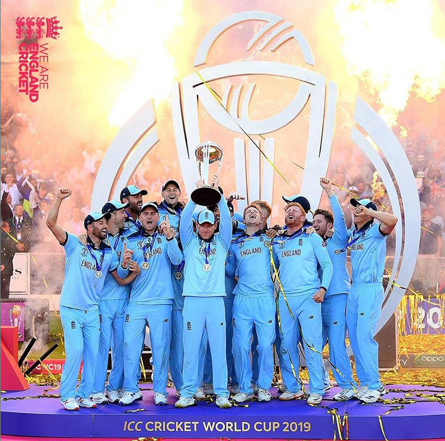

ENGLAND CRICKET TEAM
England was the first team to found the CRICKET in the year of 1844.They first played the test cricket.
The England cricket team are one times World Champions. They triumphed over Newzealand in the 2019 Cricket World Cup on home soil- "A remarkable achievement". They were also runners-up at the 1979,1987 and 1992 Cricket World Cup, and semifinalists four times(1975, 1983). They failed to qualify for the knockout stages 1996,2003,2007 and 2011 . India's historical win-loss record at the cricket world cup is 46-27, with 1 match being tied and another one being abandoned due to rain.
The Ashes is a Test cricket series played between England and Australia. The Ashes are regarded as being held by the team that most recently won the Test series. If the test series is drawn, the team that currently holds the Ashes retains the trophy. The term originated in a satirical obituary published in a British newspaper, The Sporting Times, immediately after Australia's 1882 victory at The Oval, its first Test win on English soil. The obituary stated that English cricket had died, and "the body will be cremated and the ashes taken to Australia".[1] The mythical ashes immediately became associated with the 1882–83 series played in Australia, before which the English captain Ivo Bligh had vowed to "regain those ashes". The English media therefore dubbed the tour the quest to regain the Ashes.